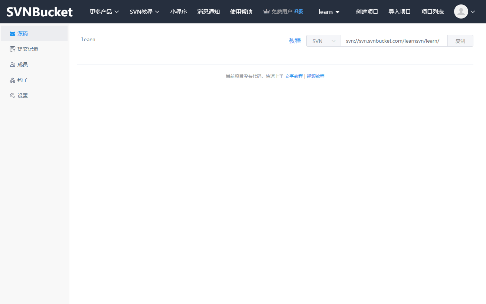
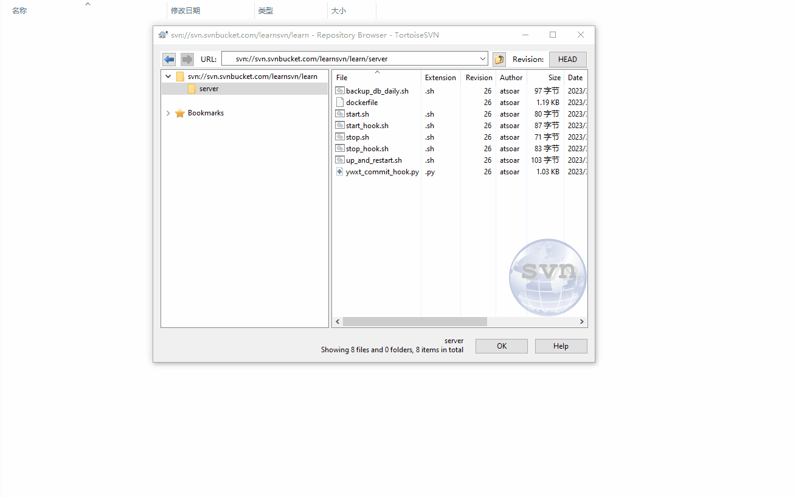

SVN 最方便的快速导入、下载操作 - 文件浏览器
2021年4月6日
本篇讲解如何使用 TortoiseSVN 的文件浏览器查看 SVN 上的文件，并且进行文件的导入、上传、下载操作，就跟操作 FTP 一样简单方便。
这种操作方式非常适合非开发人员使用，上手简单操作方便
如果你还没有 SVN 服务端，推荐你使用 SVNBucket，提供了可视化的操作界面，非常简单方便
查看 SVN 中的文件，导入新文件

- 首先我们到 SVNBucket 网站上复制了一个 SVN 项目的仓库地址。
- 然后在一个目录中右键选择
TortoiseSVN - Repo-Browser（你需要安装 TortoiseSVN才有这个右键菜单） - 填入你的 SVN 仓库地址，点击确定就可以浏览到 SVN 仓库里的文件了（因为我演示的项目没有文件在仓库里，所以这里是空白）
- 然后我们就可以拖动文件到里面直接导入文件到 SVN 仓库啦（弹出来的窗口是让你填写提交描述，我们也可以不用填写，直接确定就提交上去了）
下载文件

- 直接从文件浏览器中拖动出来就可以下载文件了，非常方便。
- 另外你还可以拖动文件到里面上传文件喔。
创建文件夹、移动文件

- 右键菜单我们还可以直接在 SVN 仓库中创建文件夹
- 拖动就可以移动文件位置
- 当前你也可以在自己电脑上创建好文件夹，然后拖动上传，只不过麻烦一点点。